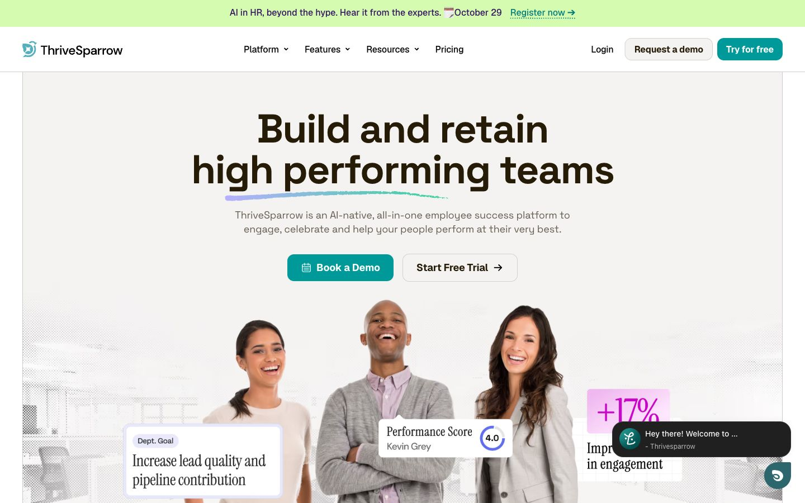
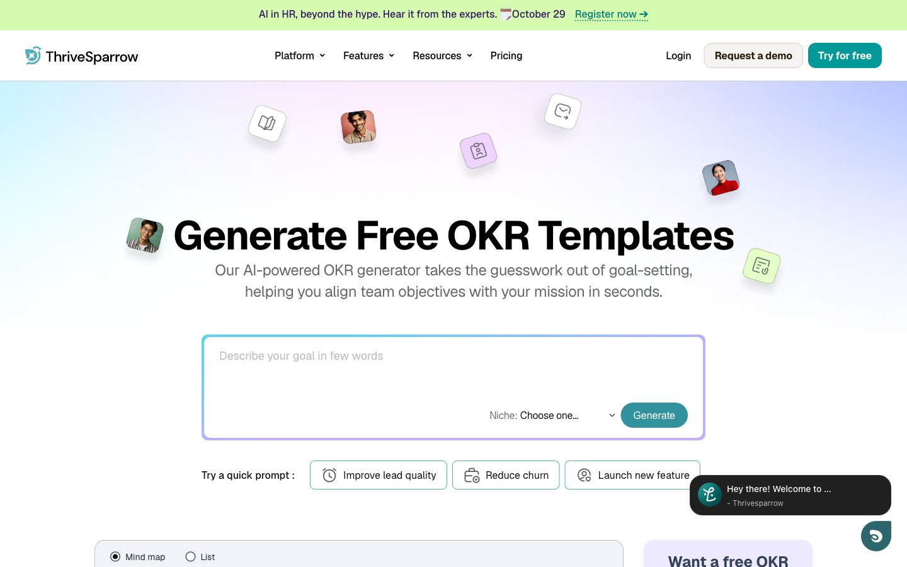
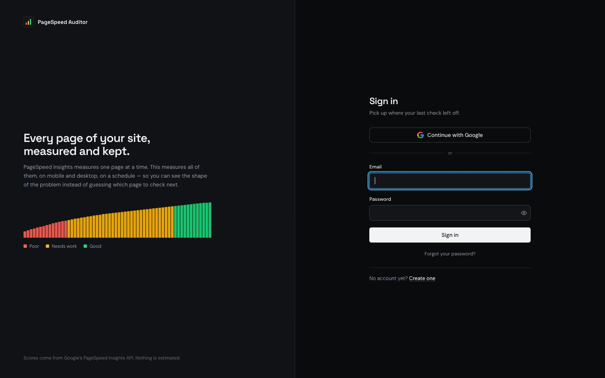
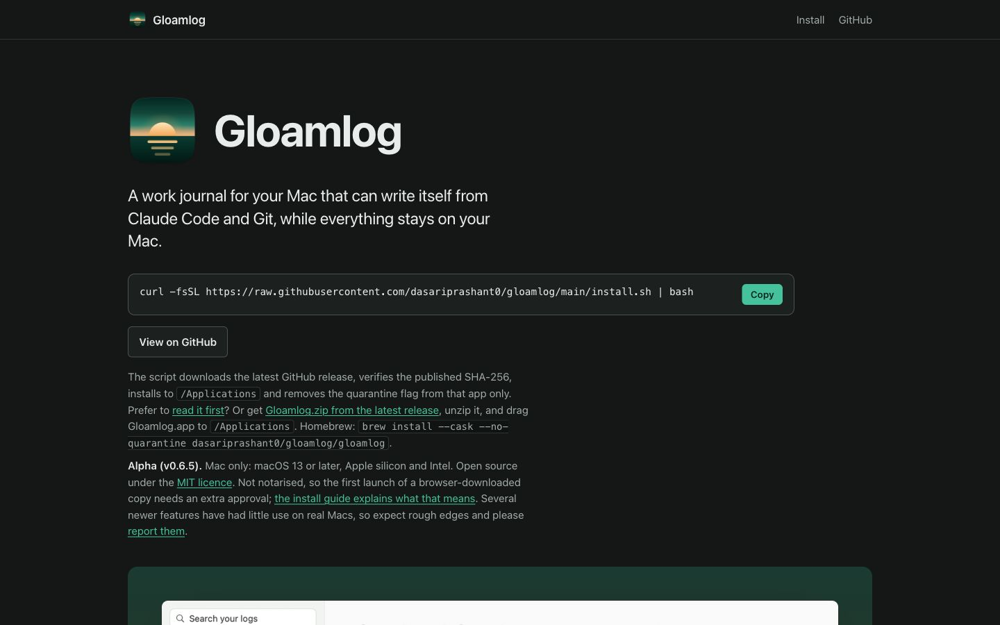

July 2026 to now
Frontend Engineer Zuddl, remote
- Owns the marketing website: Webflow, performance, analytics and technical SEO.
I'm Prashant Dasari, a frontend engineer at Zuddl. React, Next.js and Webflow, previously at SurveySparrow.

Owned the Webflow marketing site end to end. Cut the CSS bundle by 45%, got Core Web Vitals to Good on every key page, and automated 500+ programmatic SEO pages.

A free OKR-building tool on Webflow CMS, built for organic search and Core Web Vitals. One of the highest-traffic pages on the site.

Runs Google PageSpeed Insights on every page of a site, mobile and desktop, on a schedule, and keeps the history in a dashboard.

A free, open-source Mac work journal. One markdown file a day, which Claude Code and Git can write for you. Built end to end with Claude Code, shipped through Homebrew.
Read-only Google Analytics 4 server for Claude on Cloudflare Workers. Each teammate signs in with their own Google account. TypeScript.
Lets Claude inspect and edit Tag Manager workspaces, and never publish. A CI allowlist check blocks unsafe changes. TypeScript.
Product UI for creating, reviewing and approving employee nominations. React, TypeScript, React Query.
A 3D car showcase in plain HTML, CSS, JavaScript and GSAP.
Real-estate listings with search and filters. React, Tailwind CSS, Firebase.
First freelance build: a responsive Webflow site, from Figma to live in under two weeks.
Longer write-ups of each project are in my portfolio, and the rest is on GitHub.
contributions in the last year
Public activity, refreshed daily from GitHub by this site's own workflow. Last update . See the profile.
July 2026 to now
March 2024 to June 2026
2019 to 2023
I care about the details: the bundle that is 10 KB too heavy, the easing curve that feels mechanical, the empty state nobody thought about. Most of my work sits between design and engineering, turning Figma files into interfaces that hold up in production and marketing sites that actually get found.
Off the clock I play table tennis and foosball, follow football, and read more light novels than is probably healthy.